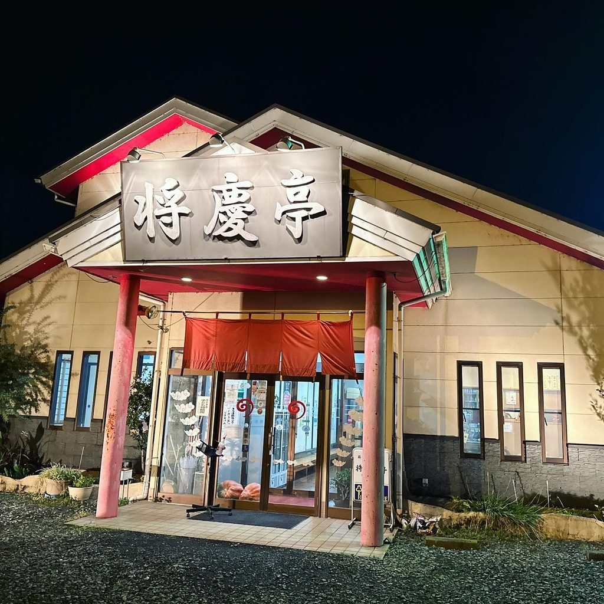
トマトをくし形に切って、タンメンに。
野菜の旨みを引き出したスープに、トマトを合わせた当店の看板です。何年も続けてご注文くださる方が多く、はじめての方にも、まずこの一杯をおすすめしております。辛いものがお好きな方には、チリタンメンもございます。
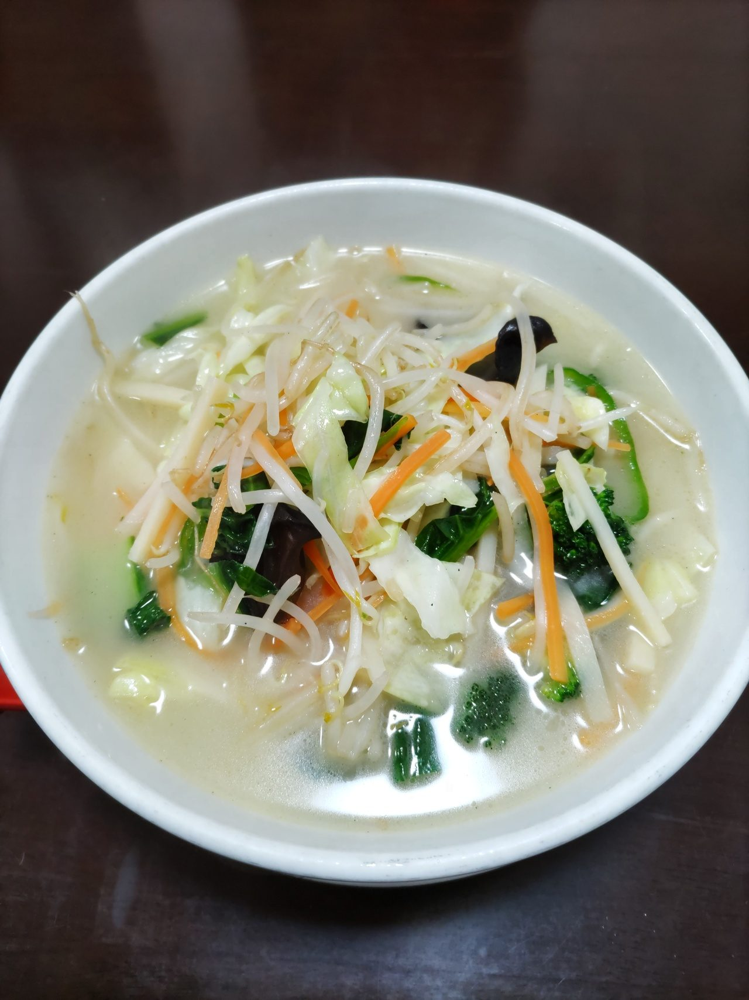
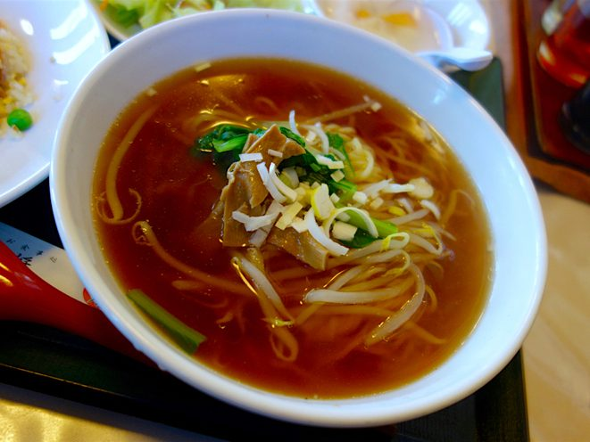
野菜の旨みがぎっしりとつまった野菜たっぷりタンメンは、トマトの一杯と並ぶ当店の定番です。将慶亭特製担々麺は、自家製のラー油とすりゴマの旨味と風味が香り、胡麻と具が麺に絡みます。醤油ラーメン、ワンタン麺、チャーシューメン、あんかけの麺と焼きそばもご用意しております。
当店人気No.1の特製焼餃子です。追加のご注文をいただく率もNo.1です。麺やご飯物に添えるセットでも、焼餃子を3個お付けしております。
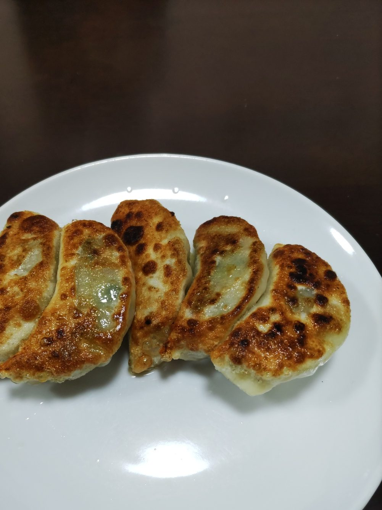
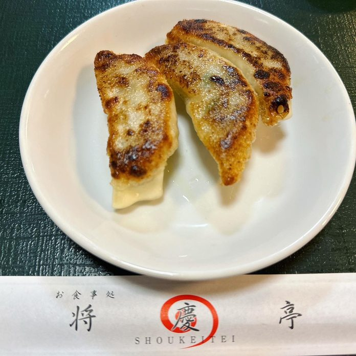
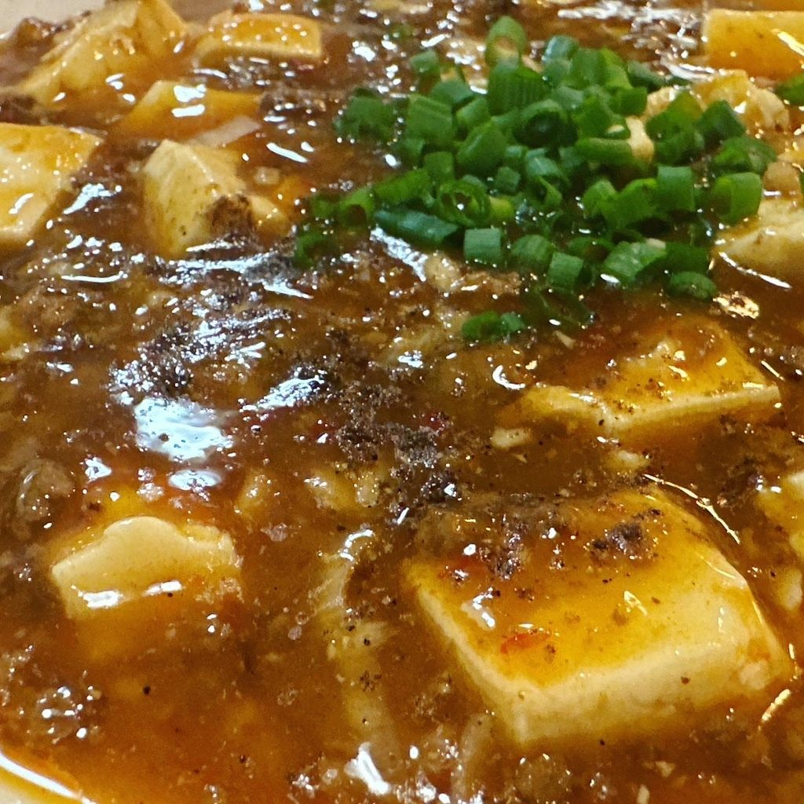
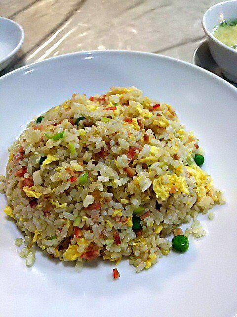
こだわりの四川麻婆豆腐は、辛さの中にもコクのある味わいに仕上げております。チャーハンは五目、エビ、カニとレタスの三種。中華丼、エビあんかけご飯、豚バラ飯とあわせて、ご飯物だけでも迷っていただける品数をご用意しております。
お昼は日替わりをA・B・Cの三種ご用意し、酢豚や若鶏の唐揚などのランチもございます。ランチには、サラダ・スープ・お新香・杏仁豆腐をお付けします。麺やご飯物にも、ランチのセットがございます。
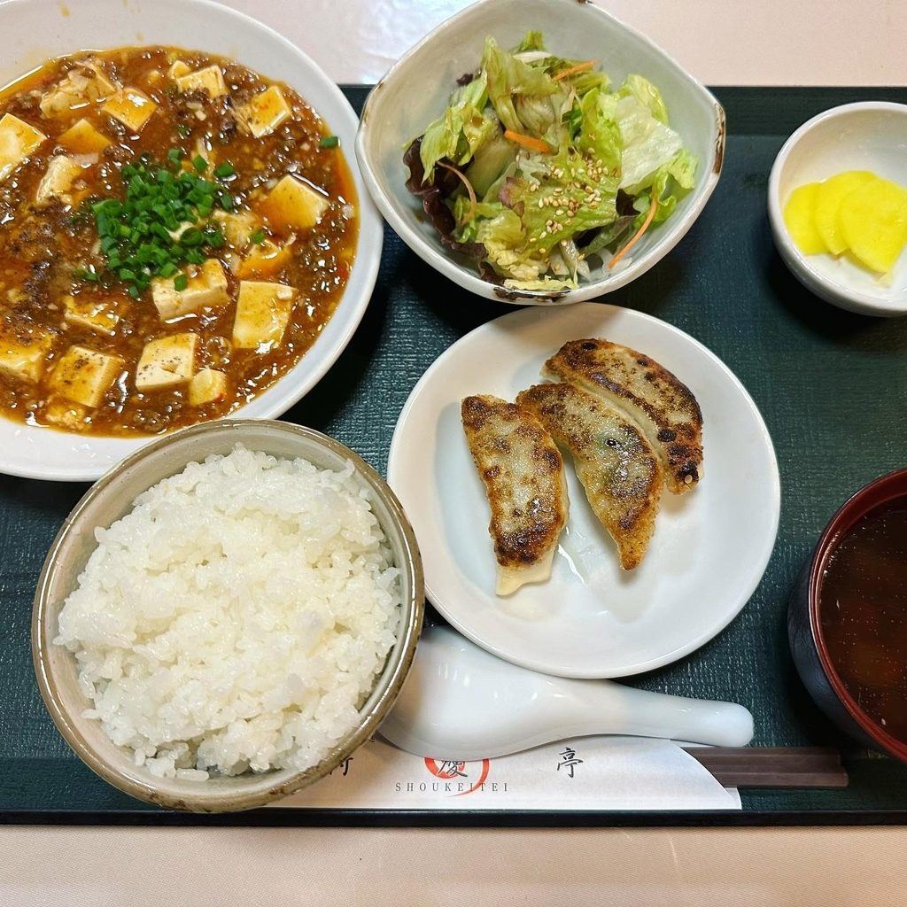
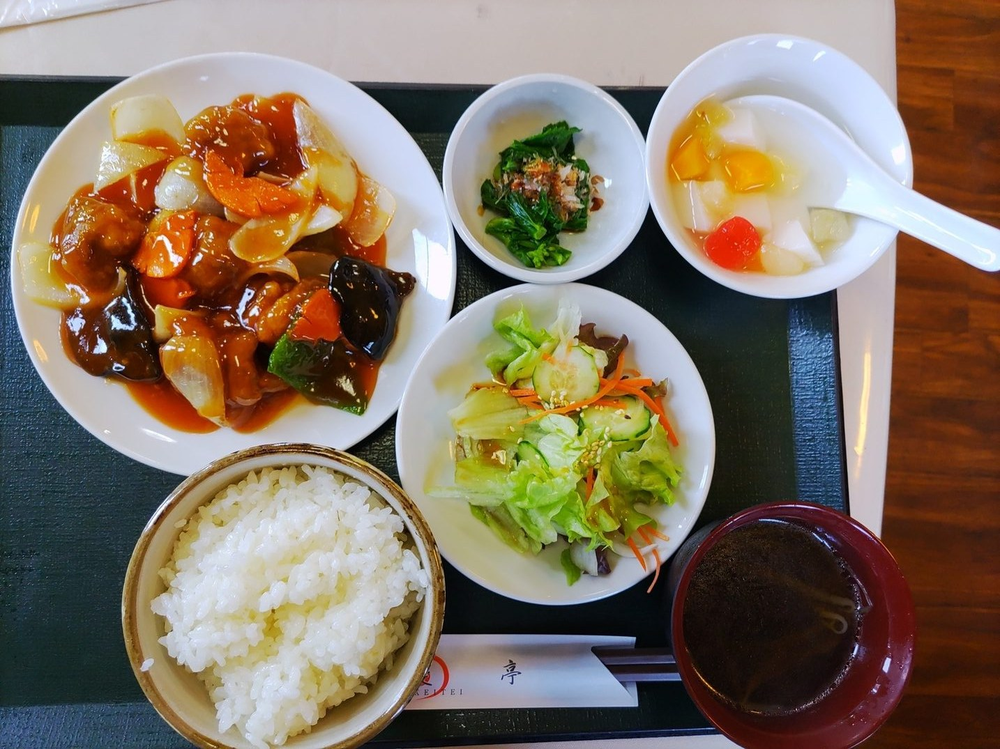
お座敷の大広間と、テーブル席をご用意しております。ご家族でのお食事はテーブル席で気軽に、宴会やご慶事、ご法事のお集まりは大広間で、大皿の料理を囲んでゆっくりお過ごしください。ご法事やお祝いのお集まりは、ご人数とお日にちをお電話でご相談ください。0285-38-1545
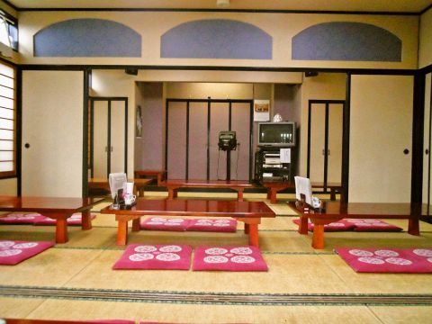
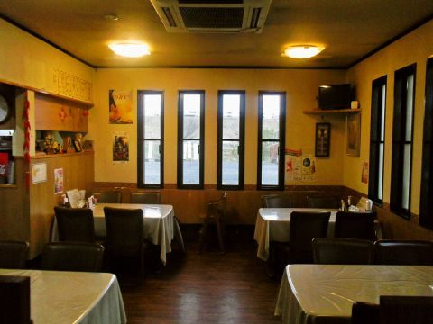
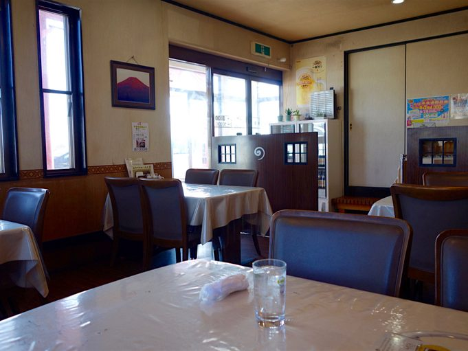
| 営業時間 | 昼 11:00〜14:30（L.O.14:00） 夜 17:00〜22:00（L.O.21:30） |
|---|---|
| 定休日 | 月曜（祝日の場合はお問い合わせください）。臨時のお休みはXでお知らせしております。 |
| お席 | 70席。テーブル席とお座敷 |
| 駐車場 | 50台・無料（大型車も停められます） |
| お持ち帰り | できます。お問い合わせは 0285-38-1545 まで |
| SNS | X（@shoukeitei01）→ |
みなさん絶賛している、トマトたっぷりタンメンをいただきました。野菜の出汁がよく出ていて、優しい味の新しいラーメンですね。
お客様の声より
食事中、箸を落としてしまったんですが、わたしが声をかける前に、箸を落とした音を聞きつけて、店員さんが新しい箸を持ってきてくれました。素晴らしい対応。
お客様の声より
ラーメン以外にもチャーハンや麻婆豆腐がめちゃくちゃ美味しかったです。本格中華を楽しみたい方にもおすすめできます。
お客様の声より
国道50号線沿い、県南市場（栃木県南地方卸売市場）の目の前です。小山駅からは、50号線を足利方面へお車で15分ほどです。
皆様のお越しをお待ちしております。
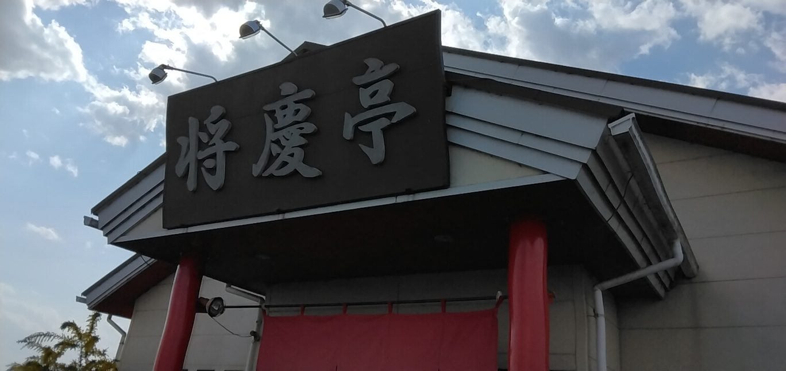